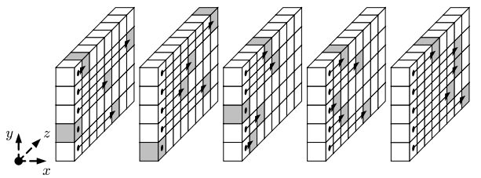
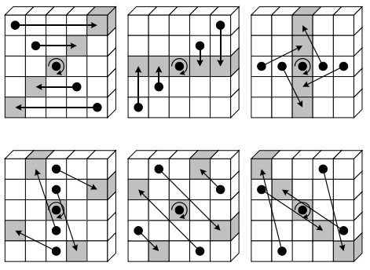
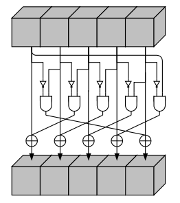

Cryptographic algorithms such as Keccak play a crucial role in securing sensitive information, but they can often seem daunting and complex to understand. The National Institute of Standards and Technology (NIST) standard for Keccak, in particular, has become a widely used cryptographic algorithm due to its high security and efficiency. However, the technical jargon and complex mathematical concepts surrounding Keccak can be intimidating for those unfamiliar with the field of cryptography. In this blog post, I aim to provide a comprehensive yet accessible guide to the NIST standard for Keccak, breaking down the technical terms and explaining them in an easier to understand way.
What is the NIST standard for Keccak?
The NIST standard for Keccak is a set of specifications for the Keccak cryptographic algorithm developed by Guido Bertoni, Joan Daemen, Michaël Peeters, and Gilles Van Assche. The NIST standard, officially known as FIPS 202, was published in 2015 as a part of a competition that NIST organized. Keccak is a family of hash functions, with different versions that provide varying levels of security and performance. The NIST standard specifies the requirements for the use of Keccak in a variety of applications, including digital signatures, key derivation, and password hashing.
Parameter Specifications
Keccak is described in the format Keccak-p[b,n] where b is the rate + capacity and n is the number of rounds. Additionally, the parameter \(w\) is defined as \(\frac{b}{25}\) and \(l\) is \(log_2(w)\). Keccak-f[b] is a subset of Keccak-p[b,n] where \(n\) is fixed to \(12 + 2l\).
| b | 25 | 50 | 100 | 200 | 400 | 800 | 1600 |
|---|---|---|---|---|---|---|---|
| w | 1 | 2 | 4 | 8 | 16 | 32 | 64 |
| l | 0 | 1 | 2 | 3 | 4 | 5 | 6 |
| Hash Function | SHA3-224 | SHA3-256 | SHA3-384 | SHA3-512 |
|---|---|---|---|---|
| Block Size (bytes) | 144 | 136 | 104 | 72 |
| Name | r | c | Output length (bits) | Security level (bits) |
|---|---|---|---|---|
| SHA3-224 | 1152 | 448 | 224 | 112 |
| SHA3-256 | 1088 | 512 | 256 | 128 |
| SHA3-384 | 832 | 768 | 384 | 192 |
| SHA3-512 | 576 | 1024 | 512 | 256 |
In this blog we are using Keccak-f[1600] which is the SHA-3 standard. This means that the rate is 576, the capacity is 1024, and the output length is 512. \(w\) is 64 and \(l\) is 6.
Input
Keccak recieves a strings of bits stored in little-endian format. Keccak pads the end of the input with the byte 0x06 followed by as many 0x00 bytes as necessary to make the input a multiple of the rate of the hash function. The last byte of the last block is set to 0x80.
Understanding SHA-3’s Hash Function
The state of the hash function is represented as a 5x5 matrix of 64-bit words. The state is initialized to all zeros. The input is then XORed with the state. The state is then passed through the Keccak-p permutation function. This process is repeated until all of the input has been processed. The output is the state of the hash function.
To convert from a bit string to the state array we use the following function:
private static long[][] stringToStateArray(String s) {
long[][] A = new long[5][5];
int i = 0;
for (int y = 0; y < 5; y++) {
for (int x = 0; x < 5; x++) {
String blockString = s.substring(i * 64, (i + 1) * 64);
A[x][y] = Long.reverse(Long.parseUnsignedLong(blockString, 2));
i++;
// 9 is the number of longs to store 576 (rate) / 64 (size of long) = 9 longs
if (i>=8) {
return A;
}
}
}
return A;
}More information about this can be found in section 3.1.2 of FIPS 202.
The 5-step mappings in the Keccak cryptographic algorithm are the core components that transform input data into a fixed-length hash output.
Some of the step mappings require this function, which rotates the bits of a 64-bit integer to the left by a specified number of bits:
private static long rotateLeft(long x, int n) {
return (x << n) | (x >>> (64 - n));
}- Theta: In this step, the input data is transformed by applying a linear function to each row of the state matrix. This step helps to increase the security of the algorithm by increasing the diffusion of the input data.

public static long[][] theta(long[][] A) {
long[] C = new long[5];
for (int x = 0; x < 5; x++) {
C[x] = A[x][0] ^ A[x][1] ^ A[x][2] ^ A[x][3] ^ A[x][4];
}
long[] D = new long[5];
for (int x = 0; x < 5; x++) {
D[x] = (C[(x+4)%5]) ^ rotateLeft(C[(x+1)%5], 1);
}
for (int x = 0; x < 5; x++) {
for (int y = 0; y < 5; y++) {
A[x][y] ^= D[x];
}
}
return A;
}- Rho: The state matrix is rotated by a certain number of positions in this step. The amount of rotation is determined by a pre-defined pattern, which varies depending on the version of Keccak being used.

- Pi: In this step, the columns and rows of the state matrix are rearranged according to a pre-defined permutation. This helps to further increase the diffusion of the input data.

- Chi: The state matrix is transformed by applying a non-linear function to each row. This helps to introduce non-linearity into the algorithm and make it more resistant to attacks.
In practice, the Pi and Rho steps are combined into a single step mapping. The combined step mapping is defined as:
public static long[][] pi_rho(long[][] A) {
final int[][] offsets = new int[][] {
{0, 1, 62, 28, 27},
{36, 44, 6, 55, 20},
{3, 10, 43, 25, 39},
{41, 45, 15, 21, 8},
{18, 2, 61, 56, 14}
};
long[][] B = new long[5][5];
for (int y = 0; y < 5; y++) {
for (int x = 0; x < 5; x++) {
int newX = 2 * x + 3 * y;
newX %= 5;
int newY = y;
long rotatedValue = rotateLeft(A[x][y], offsets[y][x]);
B[newY][newX] = rotatedValue;
}
}
return B;
}
public static long[][] chi(long[][] A) {
long[][] C = new long[5][5];
for (int i = 0; i < 5; i++) {
for (int j = 0; j < 5; j++) {
C[i][j] = A[i][j] ^ ((~A[(i+1)%5][j]) & A[(i+2)%5][j]);
}
}
return C;
}- Iota: The final step involves XORing a pre-defined round constant with a specific location in the state matrix. This helps to add additional randomness to the output and increase the security of the algorithm.
public static long[][] iota(long[][] A, int round) {
long RC = rc[round];
A[0][0] ^= RC;
return A;
}In this case the round constants are retrieved from a lookup table, however the round constants can also be calculated using Algorithm 5 from the NIST standard. Below is the lookup table for the round constants:
private static final long[] rc = {
0x0000000000000001L,
0x0000000000008082L,
0x800000000000808AL,
0x8000000080008000L,
0x000000000000808BL,
0x0000000080000001L,
0x8000000080008081L,
0x8000000000008009L,
0x000000000000008AL,
0x0000000000000088L,
0x0000000080008009L,
0x000000008000000AL,
0x000000008000808BL,
0x800000000000008BL,
0x8000000000008089L,
0x8000000000008003L,
0x8000000000008002L,
0x8000000000000080L,
0x000000000000800AL,
0x800000008000000AL,
0x8000000080008081L,
0x8000000000008080L,
0x0000000080000001L,
0x8000000080008008L
};By repeating these 5-step mappings multiple times, the input data is progressively transformed into a fixed-length hash output. The number of rounds performed depends on the version of Keccak being used and the desired level of security. The output produced by Keccak is considered to be highly secure and is resistant to various attacks such as collision, preimage, and second preimage attacks.
A single round is defined as:
public static long[][] keccakRound(long[][] A, int round) {
A = theta(A);
A = pi_rho(A);
A = chi(A);
A = iota(A, round);
return A;
}And gets repeated for the number of rounds:
public static long[][] keccakf(long[][] A, int n) {
for (int i = 0; i < n; i++) {
A = keccakRound(A, i);
}
return A;
}To put this all together, here is psuedo code for the Keccak algorithm:
function keccak-f(A)
for i from 0 to 24
A = θ(A)
A = π(A)
A = ρ(A)
A = χ(A)
A = ι(A, i)
return A
function SHA-3(M)
P = M || 0x06 || 0x00 || … || 0x80 so that len(P) * constant == rate
n = len(P)/rate
c = list of blocks with a length of rate bits
Initialize all state values to 0
for i from 0 to n-1
S = S xor c[i]
S = keccak_round(S)
Z = empty string
for i from 0 to n-1
Z = Z || S[i*b..(i+1)*b-1]
return ZApplications of Keccak
Keccak has several applications in the field of cryptography due to its high security and efficiency. Some of the common applications of Keccak include:
Hash Functions: Keccak is commonly used as a hash function to securely store and transmit sensitive data. Its resistance to various attacks makes it suitable for applications such as password storage, digital signatures, and message authentication.
Encryption: Keccak can be used for encryption, especially in applications where data needs to be transmitted securely over a network. The algorithm’s high security makes it a reliable choice for encryption.
Key Derivation: Keccak can be used to derive keys for cryptographic protocols such as TLS (Transport Layer Security) and SSL (Secure Sockets Layer). It is also used to generate keys for secure communication between different systems.
Blockchain: Keccak is used as a hashing function in many blockchain systems such as Ethereum and CryptoNote. The algorithm provides high security, which is necessary for protecting the integrity of the blockchain.
Random Number Generation: Keccak is used in random number generators for secure applications such as gambling, lottery, and cryptography.
Conclusion
In conclusion, Keccak is a powerful cryptographic algorithm that has become a popular choice for secure applications such as password storage, digital signatures, and blockchain. Its high security and efficiency make it a reliable choice for various cryptographic operations, including hashing, encryption, key derivation, and random number generation. The 5-step mappings of Keccak, also known as the Keccak-p permutation, provide a robust framework for transforming input data into a fixed-length hash output. While Keccak may seem complex and intimidating to those unfamiliar with cryptography, this blog post has provided a comprehensive yet accessible guide to the NIST standard for Keccak. By breaking down the technical terms and explaining them in an easy-to-understand way, we hope to have demystified Keccak and made it accessible to anyone interested in cryptography.